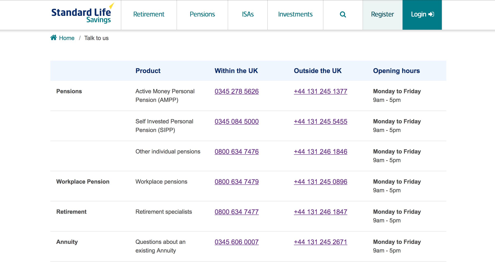
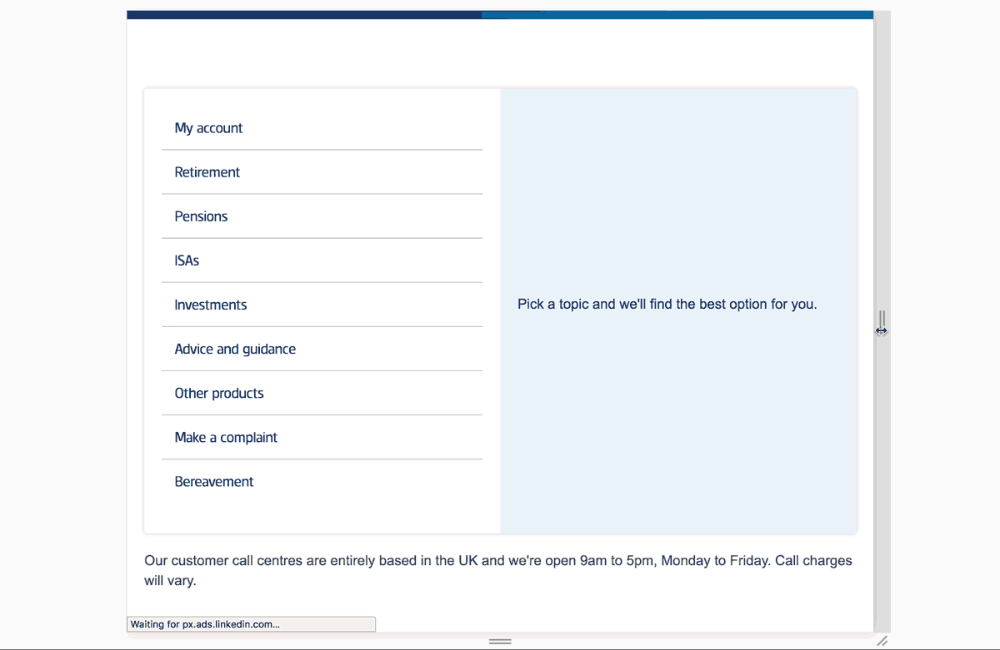

Multi-level responsive menu
I created the original prototype in HTML, CSS and JavaScript and worked directly with our web developer to implement this design. The layout, we called 'sidetabs', houses all possible ways a customer could contact or solve their query. This component has since been added to our design system component library and reused for other sites across the company.
Problem
The contact area of Standard Life's customer website used to be split over pages titled ‘Contact Us’ and ‘Talk to us.’ The former was a mix of FAQs and a seemingly random set of contact options while the latter was a page with a massive list of phone numbers.
Solution
The new singular page guides customers to the best option for contacting Standard Life support depending on their product or issue. This new design has helped reduce false demand to the complaints form that used to be visible at all times on the old ‘Contact us’ page while also increasing the number of customers logging in to solve their issue directly.
My role
- Research
- Stakeholder management
- HTML
- CSS
- JavaScript
Before
Previously customers were presented with an unfriendly and unhelpful table of all possible numbers for Standard Life.
After
Working with the internal Customer Operations team, I grouped the contact categories and options. The new design presents only the relevant number to call based on what has been selected.

It's a fully-responsive design that elegantly adapts to smaller screens, which this page is likely to be viewed on if a customer is trying to phone.
